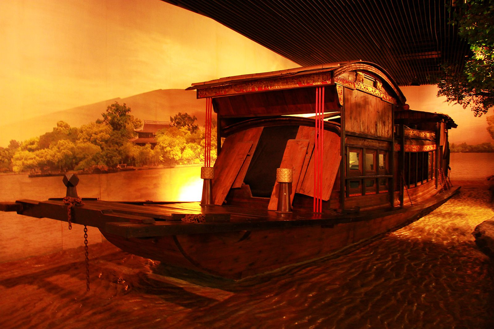
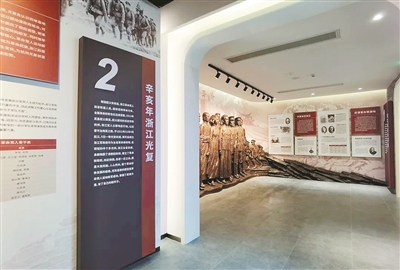
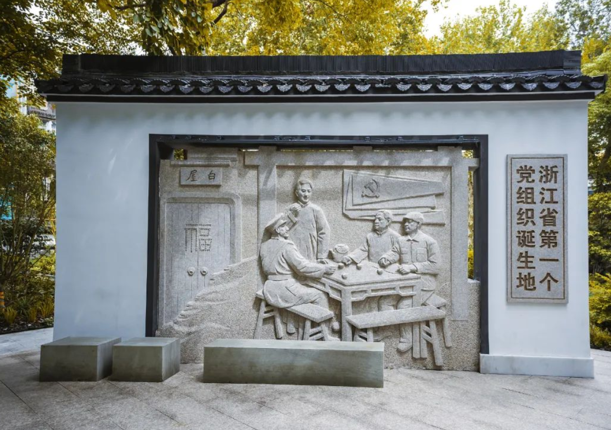
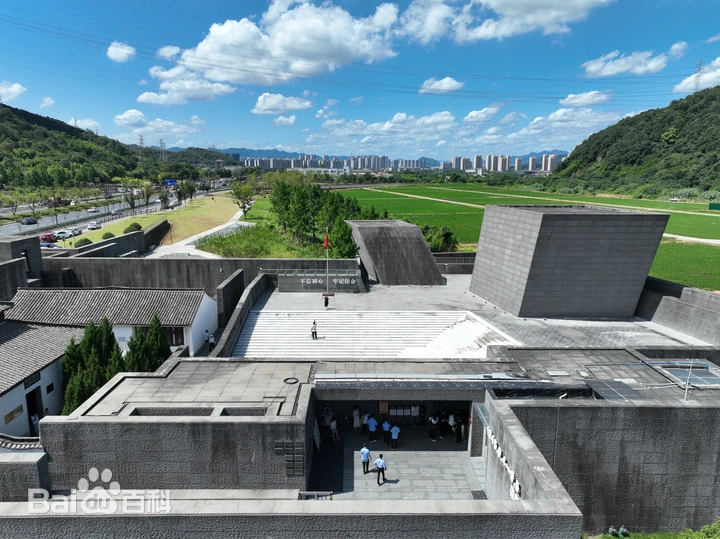

革命历史追寻线
路线概述
革命历史追寻线是一条聚焦中国共产党在浙江的革命历史和红色精神传承的研学路线，通过实地考察嘉兴南湖、杭州辛亥革命、中国共产党杭州历史以及抗日战争胜利浙江受降四个具有重要历史意义的纪念地，深入了解浙江省在革命战争年代的奋斗历程。
本路线将带领学员重温革命先辈的奋斗足迹，感受红色精神的伟大力量，培养爱国主义情怀和历史责任感。
行程天数
4天3夜
途经地区
嘉兴 → 杭州
适合人群
中学生、大学生、机关干部
主题特色
革命历史、红色精神、爱国主义
南湖革命纪念馆位于嘉兴南湖畔，是中共"一大"会址纪念地，全面展示了中国共产党创建历史和"红船精神"的深刻内涵。这里是中国共产党梦想起航的地方，具有极其重要的历史地位。 该馆的基本陈列为"中共一大史料陈列"，系统地介绍了1840年鸦片战争以后中国人民为寻求救国救民的道路而不断探索、抗争以及中国工人阶级的壮大、马克思主义在中国的传播、共产主义小组的建立直至中国共产党的成立这一历史史实。 其中，着重介绍了中国共产党成立的历史过程。此外，还有"中国共产党的七十年"、"党和国家领导人对南湖的关怀"两个辅助陈列。
纪念馆通过丰富的展品和现代化的展示手段，生动再现了中国共产党诞生的历史背景和过程，让学员们深刻理解中国共产党的初心和使命。

互动体验
"红船小讲解"培训
加入"红船小讲解"培训，在红船旁为游客讲解中共一大南湖会议故事，锻炼表达能力和历史认知。
红船模型榫卯拼搭
动手用榫卯工艺拼搭红船模型，沉浸式理解"红船精神"的起源和中国共产党的初心使命。
杭州辛亥革命纪念馆位于杭州市西湖区，是为纪念辛亥革命在浙江的发展历程而建立的专题纪念馆。辛亥革命是中国近代史上一次伟大的资产阶级民主革命，推翻了统治中国几千年的君主专制制度，开创了中国历史的新纪元。
纪念馆通过丰富的历史文物、图片和文献资料，全面展示了辛亥革命在浙江的发展历程，重点介绍了浙江革命党人的英勇事迹和浙江在辛亥革命中的重要地位。学员们将通过参观学习，了解辛亥革命的历史意义和浙江革命党人的奋斗精神。

互动体验
"革命报刊"编辑体验
参与"革命报刊"编辑体验，模仿辛亥革命时期报刊风格，制作宣传革命思想的报纸。
"革命先辈"故事会
开展"革命先辈"故事会，分享浙江辛亥革命志士的英勇事迹，传承革命精神。
中国共产党杭州历史馆位于杭州市西湖风景区内，是浙江省首个全面展示中国共产党在杭州发展历程的专题纪念馆。馆内珍藏了大量珍贵的历史文物、图片和文献资料，全面展示了从1922年杭州第一个党组织建立到新中国成立后党在杭州的奋斗历程。
展馆分为"革命洪流""建设征程""改革新篇"和"时代华章"四个部分，通过现代化的展示手段，生动再现了中国共产党在杭州的光辉历程和伟大成就。学员们将通过参观学习，深入了解党在杭州的发展历程和革命先辈的奋斗精神。

互动体验
"党史时光轴"制作
参与"党史时光轴"制作活动，梳理杭州党组织发展的关键节点，加深对党在杭州发展历程的理解。
"革命先驱"角色扮演
体验"革命先驱"角色扮演，模拟早期党组织会议场景，感受革命先辈的理想信念和革命精神。
抗日战争胜利浙江受降纪念馆位于浙江省杭州市富阳区受降镇受降村（原富阳县长新乡宋殿村），是在原"受降厅"基础上扩建而成的浙江省唯一大型抗战胜利主题纪念设施，于2015年9月2日正式对外开放，总建筑面积2600多平方米。 该馆所在地为1945年9月中国战区第六受降区洽降日军旧址，系浙江地区日军投降唯一指定地点，1995年"受降厅"修复开放，2014年启动扩建工程并修整"千人坑遗址"
该馆所在地曾是1945年日军在浙江向中国军队投降的受降点，具有重要的历史意义。学员们将通过参观学习，深入了解抗日战争的历史背景、浙江军民的抗战事迹以及抗战胜利的伟大意义。

互动体验
"抗战记忆"互动问答
参与"抗战记忆"互动问答，通过历史图片拼图还原关键战役场景，加深对抗战历史的理解和记忆。
"战地通讯"模拟活动
体验"战地通讯"模拟活动，用简易信号设备传递情报，感受战时信息传递的不易和重要性。